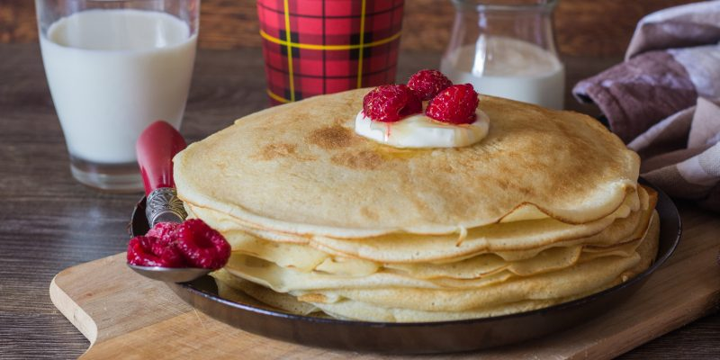

Рецепт блинчиков

Описание
Блинчики получаются очень нежными и мягкими.
Ингредиенты
- 3 яйца
- 2 столовые ложки сахара
- ¼ чайной ложки соли
- 500 мл молока
- 220–240 г муки
- ¼ чайной ложки соды
- 2–3 столовые ложки растительного масла + для смазывания.
Как готовить
- Взбейте венчиком яйца с сахаром и солью.
- Влейте примерно 100 мл тёплого молока и взбейте ещё раз.
- Всыпьте просеянную муку и соду, тщательно перемешайте.
- Постепенно влейте оставшееся тёплое молоко, перемешивая тесто до однородной консистенции.
Добавьте масло, взбейте и дайте тесту настояться 10–15 минут.
- Смажьте сковороду небольшим количеством масла и хорошенько разогрейте.
Покройте дно тонким слоем теста и обжаривайте на среднем огне с обеих
сторон до золотистого цвета.
- Смазывать сковороду можно только перед приготовлением первого блина.
Вернуться к рецептам